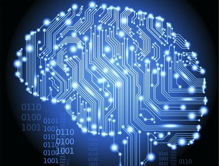

SHRI RAMDEOBABA
COLLEGE OF ENGINEERING AND MANAGEMENT
DEPARTMENT OF COMPUTER SCIENCE AND ENGINEERING
SHRI RAMDEOBABA COLLEGE OF ENGINEERING AND MANAGEMENT

VISION:
To continually improve the education environment, in order to develop graduates with strong academic and technical background needed to achieve distinction in the discipline. The excellence is expected in various domains like workforce, higher studies or lifelong learning. To strengthen links between industry through partnership and collaborative development works.
MISSION:
To develop strong foundation of theory and practices of computer science amongst the students to enable them to develop into knowledgeable, responsible professionals, lifelong learners and implement the latest computing technologies for the betterment of the society.
Salient features of Department:
- The Department of Computer Science & Engineering was established in 2002, is well-equipped with state-of-the-art infrastructure.
- The department established RCOEM-NVIDIA Center of Excellence for Artificial Intelligence, Machine Learning, Deep Learning and Data Analytics that promotes high-end computing through Open Source technologies and hosts NVIDIA DGX DL Workstation.
- The department has received a project grant of INR 1.03 crores in association with CSIR-Central Institute of Mining and Fuel Research (CIMFR), Nagpur Research Centre (Fuel Sciences).
- The department laboratories are well equipped with hardware and firmware in line with the current trends for development of projects in varied domains like, IoT, Robotics and networking.
- The department is involved in innovative practices that resulted in students winning awards for projects of social relevance viz., USD 5000 in Data Streamr Challenge and USD 3500 in Biconomy HackMoney.
- The department motivates and guides the students to excel in National and Inter-national Events like Smart India Hackathon and ICPC resulting in 3 teams winning the Smart India Hackathon with prize money of Rs. 75000 each in 2019 and 1 team winning Rs. 1 lakh in 2020. Over 8 teams have also represented the college in regionals of ICPC.
- The department has MOUs with companies like Infosys, Persistent, Accenture, GlobalLogic India Pvt. Ltd., Infocepts that have resulted in acquiring the required support and training on the latest software products which has helped in bridging the gap between institution and industry.
- The department provides a platform to actively contribute to get through the challenges by CodeChef, HackerRank, HackerEarth, Geeks Coding to name a few.
- Students are encouraged to appear for GATE, CAT, GRE and other competitive examinations and opt for higher studies from highly ranked universities in the field of Engineering and Management.
- The department is involved in providing guidance to research interns facilitating student publications in reputed journals.
- The department also nurtures extra-curricular skills of students to get recognized at state, national and inter-national levels.
Career Prospects:
There is large employment potential for Computer Science & Engineering graduates in numerous sectors like Software Industries, IT Enabled Service firms, Research Sector and Communication industry. CSE graduates are offered employment from companies, namely, Goldman Sachs, ZS Associates, Amazon, Principal Global Services, Capgemini, LLC, Infosys, Informatica, VMware, BirlaSoft, TCS, Persistent Systems Ltd., BYJU's, Tata Consultancy Services, GlobalLogic India Pvt. Ltd., Infocepts, Accenture, L&T, Merkle Sokrati, Softlink International and others with the average package being 4.81 lakhs. Dream companies like Goldman Sachs, Amazon and VMware offered compensation as high as 23 lakhs, 20 lakhs and 19.5 lakhs respectively. Graduates can seek opportunities to work in profiles like Software Developer, Application Developer, Enterprise Architect, Data Analyst, Database Administrator, Client Server Systems Manager etc. in these firms. In Government sector they can serve in reputed firms like NTPC, ONGC, ISRO, Banking Sector, Communication Industry like BSNL, MTNL etc. A few graduates have also excelled at Industry coding contests thereby grabbing placement in dream companies. Some graduates have also made efforts towards entrepreneurship and have successful startups, Tecture Business Solutions, PocketSavy, GreyOcean, SANICON, WebGile Solutions, BILogix, Ola Gate to name a few. The alumni of the department are pursuing higher studies at international and national universities of repute, namely, Illinois Institute of Technology Chicago, University of Texas, University of Southern California, North-Eastern University, Stevens Institute of Technology, New Jersey, IIT Bombay, IIIT Bangalore, XLRI Jamshedpur, SIBM Pune, IMT Ghaziabad and IIM Indore. Our alumni are working with software majors, viz., Rediff, Amazon, Microsoft, Yahoo, Informatica, JP Morgan, Intel, and Oracle with approximate annual packages of over INR 25 lakhs.
Industry Institute Interaction:
Department has good industry interaction with Software industries, Government organization and Private Sectors around the region. The Memorandum of Understanding is signed for Student Projects, Faculty Trainings, and Research work. The industry offers problem definitions to pre-final and final year students for projects along with guidance. The final outcome in most of projects is integrated as part of product and utilized by industry. The industry offers training in recent trend and technology in the form of Open Elective courses. The guest lectures are organized by department by inviting industry experts in the areas of Mobility, Big Data, and Storage Management. To provide platform for students to demonstrate skill, department organize yearly technical event “Polaris”. This event is organized in association with Computer Society of India (CSI). The event witness large participation of students from various institutes across Nagpur region. The event is judged by industry experts. Every year an industry tour is organized by department to reputed Software Industries in India to help students to get acquainted with environment and working culture of software industry

PROGRAMS OFFERED:
-
B.Tech. (CSE)
-
M.Tech. (CSE)
-
B.Tech. (CSE) with specialization in AIML
-
B.Tech. (CSE) with specialization in DS
-
B.Tech. (CSE) with specialization in Cyber Security
CSE
Computer Science Engineering is a course that deals with design, implementation, and management of information systems of both software & hardware processes. A computer scientist specializes in theory of computation and design of computational systems. Computer Science engineering aids with various disciplines such as electrical and electronics engineering, information technology, software engineering, and more.
AIML
Computer Science B.E in Computer Science & Engineering with specialization in Artificial Intelligence & Machine Learning (AL & ML) is a four years undergraduate course, designed to enable students to build intelligent machines, software, or applications with a cutting-edge combination of Artificial Intelligence, Machine learning and Deep Learning technologies after equipping them with the basic fundamentals of Computer Science and Engineering.
DS
Computer Science B.E in Computer Science and Engineering (Data Science) is a full time eight semester program offered by the department of Computer Science and Engineering. The main aim of this programme is to provide graduates in data science with essential training of quantitative knowledge, statistical theory, data mining technology and computing tools for the effective use and analysis of big and complex data for real-world applications that involve making sense of complex data to realize planning and decision making. Graduates of this programme will have future-proof expertise that will enable them to thrive in the rapidly changing world of the next few decades.
Cyber security
Computer Science To develop talent as well as Professionals in this field, RCOEM is starting B. E. in Computer Science & Engineering (Cyber Security) which is a 4-year undergraduate degree course that will be introduced from session 2020-21 with an intake of 60 under the Umbrella of Computer science and engineering stream. This program with the specialization of Cyber Security will be helpful to students who are interested in pursuing career in cyber security.